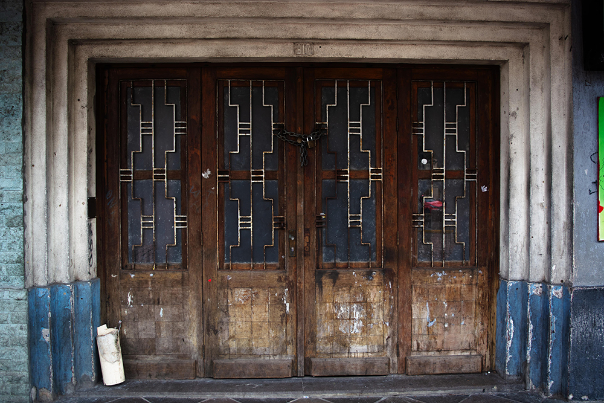
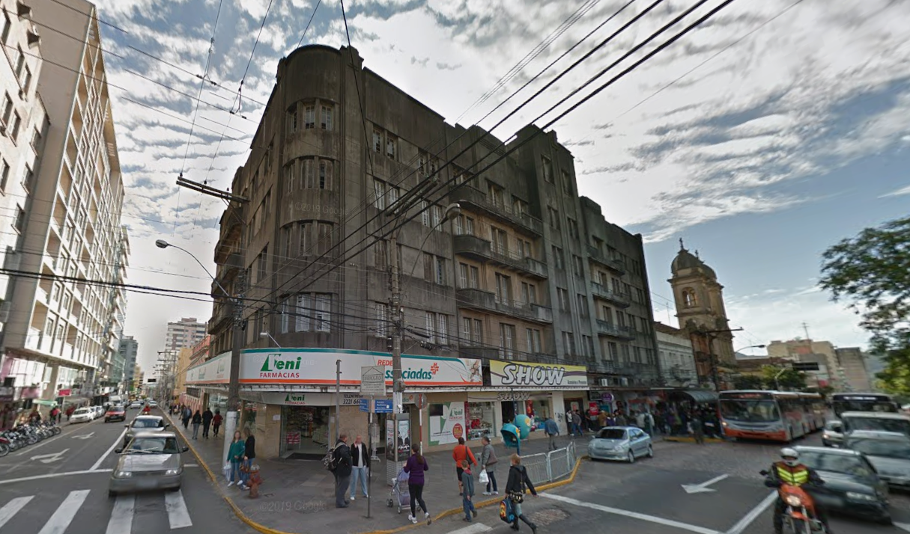
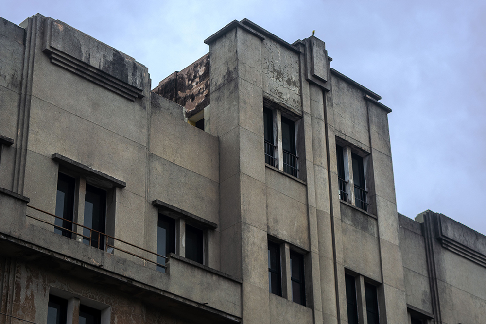

A construção do edifício foi uma resposta à crescente necessidade de Santa Maria por uma hotelaria de maior porte para atender à demanda da cidade, que se consolidava como um importante entreposto ferroviário e militar. A iniciativa partiu do empresário José Cauduro que, a pedido do então prefeito, Dr. Antônio Xavier da Rocha, concordou em construir um grande hotel em um terreno de sua propriedade na Avenida Rio Branco, esquina com a Rua Venâncio Aires.
Projetado pelo engenheiro Dr. Schmidt, de Porto Alegre, o edifício foi construído em pouco mais de dois anos e inaugurado em 1941. A estrutura de quatro pavimentos era dotada de dezenas de quartos, salão de refeições e foi o segundo prédio na cidade a contar com a modernidade de um elevador.
Antes mesmo da inauguração do hotel, parte do edifício já era ocupada. Em outubro de 1940, o salão da esquina abrigou uma filial das Casas Eny, uma loja de calçados que permaneceu no local até o início dos anos 1970. Em 1941, o renomado hoteleiro Sílvio Jantzen, de Livramento, inaugurou o Novo Hotel Jantzen, que se tornou uma forte referência para os viajantes que chegavam à cidade, especialmente na época do trem. O hotel se destacou pelo nível de excelência, até então inédito em Santa Maria. No último andar do prédio funcionou o "restaurante centenário", que atendia tanto os hóspedes quanto a comunidade local. O restaurante oferecia um serviço à la carte com pratos tradicionais da culinária rio-grandense, como o "Bife a Pé" e o "Bife a Cavalo".
Atualmente, o Edifício Cauduro encontra-se desvalorizado e em estado de degradação, sendo alvo de propostas que visam sua reutilização com aproveitamento de seus elementos histórico-culturais para que possa se tornar um atrativo de turismo cultural na cidade.
BAIRROS, Amanda da Silveira; MELLO, Carolina Iuva de. Coleção Santa Déco: patrimônio edificado como referência criativa para o design de superfície. Plural Design, Joinville, v. 4, n. 1, p. 29-38, jan./jun. 2021.
FLÔRES, Anelis Rolão; PEREIRA, Clarissa de Oliveira; QUERUZ, Francisco. Mapeando Memórias: o projeto interpretativo como ferramenta de preservação. Cadernos de Pós-Graduação em Arquitetura e Urbanismo, São Paulo, v. 25, n. 1, p. 147-165, 2025.
GRASSI, Eduardo Corrêa de Barros; COELHO, Eva Regina Barbosa. Resgate histórico do edifício Cauduro de Santa Maria-RS e seu aproveitamento turístico. Disc. Scientia. Série: Artes, Letras e Comunicação, Santa Maria, v. 9, n. 1, p. 205-221, 2008.
MACHADO, Maria Dinair Santos; RIBEIRO, Marcelo. Dos trilhos aos palacetes: refletindo sobre o acervo arquitetônico da Av. Rio Branco, Santa Maria, RS. Conexões Culturais - Revista de Linguagens, Artes e Estudos em Cultura, v. 1, n. 2, p. 217-232, 2015.
PIQUINI, Giulia et al. Mapeando memórias: a história do patrimônio arquitetônico contada através das fachadas. In: SIMPÓSIO DE ENSINO, PESQUISA E EXTENSÃO, 27., 2023, Santa Maria. Anais [...]. Santa Maria: UFN, 2023.
RODRIGUES, Lidia Glacir Gomes; PONS, Mônica Elisa Dias. Art Déco no sul do Brasil divulgado por meio de audiovisual. Revista Conexão - Comunicação e Cultura, v. 21, n. 41, p. 137-147, jan./jun. 2022.